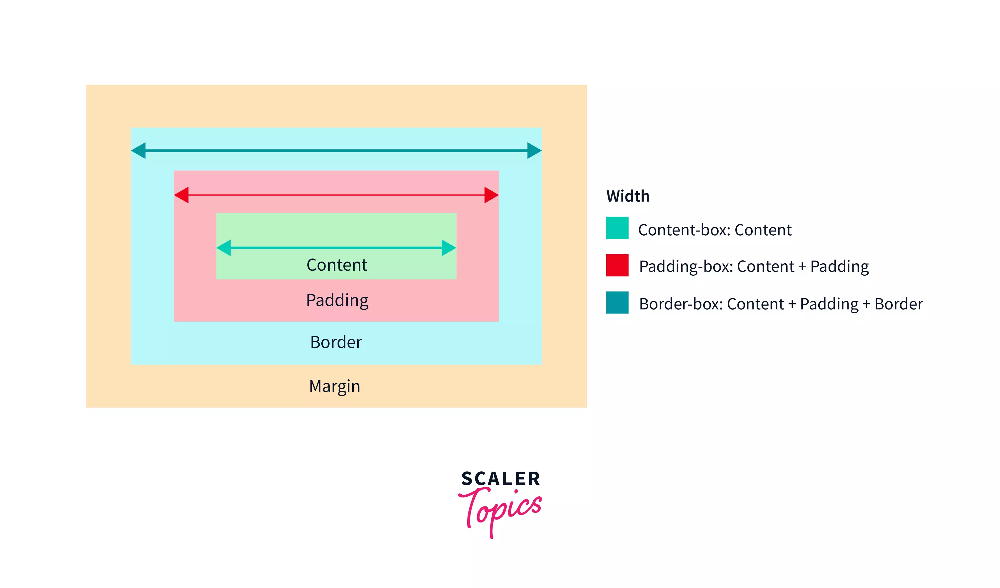
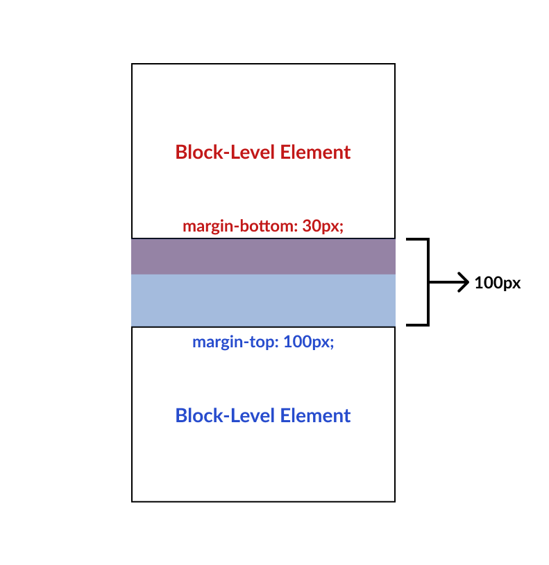

Box Model in CSS
The box model in CSS is a fundamental concept that describes how elements on a web page are structured in terms of width, height, padding, borders, and margins.
The box-sizing property in CSS allows you to specify how the total width and height of an element are calculated. The default value is content-box, which includes only the content width and height. Setting it to border-box includes padding and border widths in the total width and height of the element.


Clearfix Hack
The clearfix hack is a technique used to fix issues related to floated elements inside a container. When an element is floated, it is taken out of the normal document flow, which can cause its parent container to collapse.
To apply the clearfix hack, you can use a CSS class or pseudo-element to clear the floats. This ensures that the parent container expands to contain the floated elements properly.

Margin Collapse
Margin collapse is a phenomenon in CSS where the margins of adjacent elements collapse into a single margin. This can happen in several situations, such as when two vertical margins touch each other.
The margin: auto; property is commonly used to horizontally center block-level elements within their parent containers. Negative margin values are often used for creating overlapping effects or adjusting the positioning of elements.


Holy Grail Layout Problem
The Holy Grail layout refers to a common web design pattern that consists of a header, footer, and three columns of content, with the center column being the main content area.
One problem with achieving the Holy Grail layout is creating a fluid layout that adjusts to different screen sizes while maintaining equal column heights.
Modern Solutions for Holy Grail Layout
Modern solutions for the Holy Grail layout often involve using CSS Flexbox or CSS Grid layout techniques. These provide more flexibility and control over the positioning and alignment of elements, making it easier to create complex layouts like the Holy Grail.
Flexbox allows you to easily create flexible layouts where elements within a container can be dynamically arranged and resized based on available space. CSS Grid provides a two-dimensional grid system, making it ideal for creating complex, grid-based layouts with precise control over rows and columns.